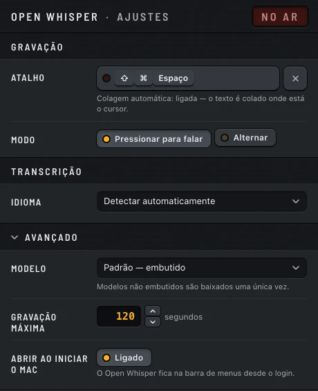
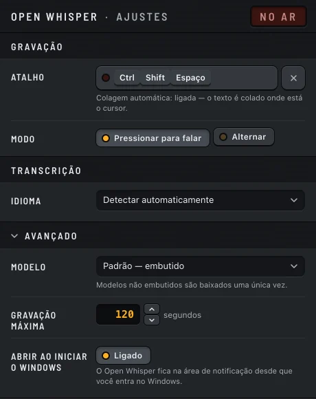

O modelo é a parte do Open Whisper que transforma fala em texto. Um já vem com o app, e outros três podem ser baixados. Esta página diz para que serve cada um, como obtê-los e o que não dá para fazer com eles.
O que é um modelo
Um modelo de fala é um arquivo grande que aprendeu a reconhecer a fala. O Open Whisper roda esse arquivo no seu computador: o áudio entra no modelo, o texto sai, e nada é enviado para lugar nenhum. Os modelos são versões do Whisper preparadas para rodar num computador comum.
- Um modelo maior costuma errar menos, e ocupa mais disco e mais tempo.
- Os quatro modelos são multilíngues: cada um entende todos os idiomas de Idioma, e também a detecção automática.
- O ditado e o vídeo têm cada um a sua escolha de modelo. Dá para deixar um rápido no ditado e um mais cuidadoso no vídeo.
- Junto com o modelo, o app traz um pequeno detector de voz, que separa fala de ruído. Ele não é uma opção que você escolhe.
Os quatro modelos
| Nome no app | Id | Tamanho | De onde vem |
|---|---|---|---|
| Padrão | small-q5_1 | cerca de 181 MB | embutido no app |
| Leve | base | 141 MB | download |
| Grande | medium-q5_0 | 514 MB | download |
| Mais preciso | large-v3-turbo-q5_0 | 547 MB | download |
- Padrão é o modelo com que o app começa, no ditado e no vídeo. Ele já está no computador e está sempre disponível.
- Leve é menor e mais rápido que o Padrão, e erra mais.
- Grande e Mais preciso erram menos e são mais lentos. Foram pensados para vídeo, quando ninguém está esperando o texto no cursor.
Os ids são os nomes que a linha de comando usa em --model.
Escolher um modelo
Para o ditado
- Abra Ajustes… no menu do Open Whisper.
- Clique em Avançado.
- Em Modelo, escolha um. Se ele ainda não está no computador, o download começa.
O próximo ditado já usa o modelo novo, sem reiniciar. Se um modelo não carregar, o app continua com o que estava usando.
Fique com o Padrão, a não ser que tenha um motivo para trocar. Um ditado deve ser colado em poucos segundos, e os dois modelos maiores podem fazer você esperar. Se os seus ditados parecem lentos, experimente o Leve.
Windows
No Windows, a transcrição roda no processador, sem aceleração pela placa de vídeo. O tamanho do modelo pesa no tempo de espera.
Para o vídeo
Na janela de vídeo, abra Qualidade e escolha um Modelo ali. Essa escolha é separada da do ditado. Ao lado de cada modelo, a janela diz se ele está já embutido, se é um download único de … ou se está …, já baixado e, para os dois menores, a taxa de erro medida em português. A janela resume assim: Modelos maiores erram menos — sobretudo em palavras em inglês faladas no meio do português. Em troca, ocupam disco e demoram mais. Veja Vídeo e arquivos.




Baixar um modelo
Escolher um modelo que não está no computador, nos ajustes ou na janela de vídeo, faz o download dele. Cada modelo é baixado uma única vez; depois ele fica no computador, para o ditado, o vídeo e a linha de comando.
- O arquivo vem do Hugging Face, de
https://huggingface.co/ggerganov/whisper.cpp. Essa é uma das poucas vezes em que o Open Whisper usa a rede, e só acontece quando você escolhe um modelo. Nunca durante um ditado. A lista completa está em Privacidade. - Quando o download termina, o app confere o arquivo pela impressão digital SHA-256 conhecida. Um arquivo danificado ou incompleto não é usado.
- Um download não começa enquanto um ditado está em andamento. Espere o ditado terminar.
Onde ficam os modelos
Mac
- Modelos baixados:
~/Library/Application Support/open-whisper/models/(base.bin,medium-q5_0.bin,large-v3-turbo-q5_0.bin). - O modelo embutido fica dentro do app:
Open Whisper.app/Contents/Resources/models/.
Windows
- Modelos baixados:
%LOCALAPPDATA%\open-whisper\models\(base.bin,medium-q5_0.bin,large-v3-turbo-q5_0.bin). Essa pasta fica fora do perfil móvel (roaming). - O modelo embutido fica na pasta
models, onde o Open Whisper foi instalado.
O que não dá para fazer
- Não existe botão para remover um modelo baixado. Para liberar o espaço, primeiro escolha outro modelo nos ajustes e na janela de vídeo, depois apague o arquivo da pasta acima.
- São só estes quatro modelos. Não dá para acrescentar outro arquivo de modelo nem usar um serviço de transcrição na internet.
- A linha de comando nunca baixa um modelo. Ela usa só os que já estão no computador e termina com o código de saída 4 quando o modelo falta.